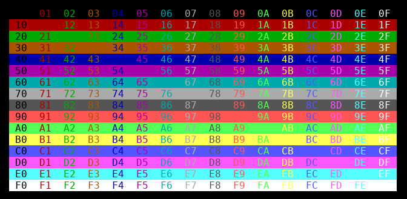

Elmenti a kurzor aktuális pozícióját. Az elmentett pozícióba a tu_restore_cursor függvénnyel lehet a kurzort vissza mozgatni.
A kurzort mozgatja arra a pozícióra, melyet előzőleg a tu_save_cursor függvény segítségével elmentettünk.
A kurzor megjelenítését kikapcsolja.
A kurzor megjelenítését bekapcsolja.
Letörli a képenyőt, a képernyő az aktuális háttérszínű lesz. A kurzort a bal felső sarokba mozgatja.
A kurzor aktuális pozíciójára szöközt ír, vagyis az ott lévő karakterhelyet törli. A kurzor pozíciója nem változik.
A kurzort az R0-ban megadott számú karakter hellyel balra mozgatja.
A kurzort az R0-ban megadott számú karakter hellyel jobbra mozgatja.
A kurzort az R0-ban megadott számú karakter hellyel felfelé mozgatja.
A kurzort az R0-ban megadott számú karakter hellyel lefelé mozgatja.
A kurzort a paraméterekben megadott pozícióra mozgatja. A bal felső sarok koordinátája: x=1, y=1.
Beállítja az előtér és a háttér színt, amelyek a következő kiírástól kezdve jutnak érvényre. A 0-7 közötti értékek a három alap szín (0.bit=piros, 1.bit=zöld, 2.bit=kék) keveréséből adódnak, a 8-15 közötti értékek ugyanezeket a színeket eredményezik "nagy intenzitással". A megjelenített színek az alkalmazott terminaál programtól függnek. Egyes programok esetén az alkalmazott szín profil konfigurálható is lehet.
Ha az előtér vagy a háttér szín paraméter negatív, akkor az a szín nem módosul.
Az alábbi ábrán láthatók a kiválasztható háttér és előtér szín kombinációk. Az első hexadecimális számjegy a háttér színe, a második az előtér színe.

Az előtér (betű) szín beállítása a következő kiírás számára. A szín paramétert a tu_color függvénynél ismertetett módon kell megadni.
A háttér szín beállítása a következő kiírás számára. A szín paramétert a tu_color függvénynél ismertetett módon kell megadni.
Fekete alapon fehér szín beállítása a következő kiírás számára.
Fehér alapon fekete szín beállítása a következő kiírás számára.
Fekete alapon zöld szín beállítása a következő kiírás számára.